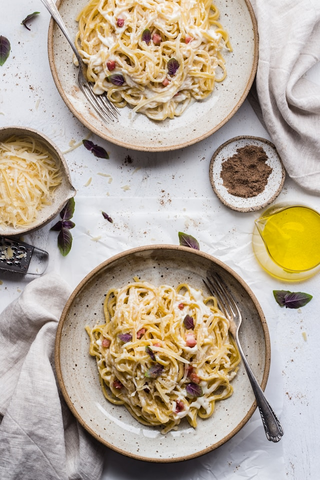

Home
Spaghetti Carbonara

Description
Spaghetti Carbonara is a traditional Roman pasta dish made with eggs, hard cheese,
cured pork, and black pepper. It’s creamy, flavorful, and comes together in under 30 minutes.
This recipe avoids cream entirely, relying on the emulsion of eggs and cheese to create
its rich, velvety sauce that clings perfectly to each strand of pasta.
Ingredients
- 400g spaghetti
- 150g pancetta or guanciale, diced
- 2 large eggs
- 2 egg yolks
- 100g grated Pecorino Romano (or Parmesan)
- 2 cloves garlic, peeled (optional)
- 2 tbsp olive oil
- Freshly ground black pepper
- Salt to taste
Steps
- Cook spaghetti in salted boiling water until al dente. Reserve 1 cup of pasta water before draining.
- Meanwhile, heat olive oil in a pan and cook pancetta (and garlic if using) until crispy. Remove garlic.
- In a bowl, whisk together eggs, egg yolks, and grated Pecorino Romano until smooth.
- Combine hot drained pasta with pancetta in the pan. Remove from heat to avoid scrambling eggs.
- Quickly stir in the egg and cheese mixture, adding reserved pasta water a little at a time to form a creamy sauce.
- Season generously with freshly ground black pepper and adjust salt if needed.
- Serve immediately, topped with extra Pecorino Romano and pepper.